This module keeps names and easy handling
for easy color support. It gives you an easy
way to get colors from names.
A color is here an object, containing color
information and methods for conversion, see below.
Image.Color can be called to make a color object.
Image.Color() takes the following arguments:
Image.Color(string name) // "red"
Image.Color(string prefix_string) // "lightblue"
Image.Color(string hex_name) // "#ff00ff"
Image.Color(string cmyk_string) // "%17,42,0,19.4"
Image.Color(string hsv_string) // "%@327,90,32"
Image.Color(int red, int green, int blue)
The color names available can be listed by using indices
on Image.Color. The colors are available by name directly
as Image.Color.name, too:
...Image.Color.red...
...Image.Color.green...
or, maybe
import Image.Color;
...red...
...green...
...lightgreen...
Giving red, green and blue values is equal to calling
Image.Color.rgb ().
The prefix_string method is a form for getting modified
colors, it understands all modifiers
(light ,
dark ,
bright ,
dull and
neon ). Simply use
"method"+"color"; (as in lightgreen,
dullmagenta, lightdullorange).
The hex_name form is a simple
#rrggbb form, as in HTML or X-program argument.
A shorter form (#rgb) is also accepted. This
is the inverse to the Image.Color.Color->hex ()
method.
The cmyk_string is a string form of giving
cmyk (cyan, magenta, yellow, black) color. These
values are floats representing percent.
The hsv_string is another hue, saturation, value
representation, but in floats; hue is in degree range (0..360),
and saturation and value is given in percent. This is not
the same as returned or given to the hsv () methods!
This table lists all the different named colors available in Image.Color.
The first column shows the actual color while the five following columns
demonstrates the modifiers neon, light, dark, bright and dull. The color
begind the name of the color is produced by calling neon()->dark()->dark()->dark()
from the color object itself, i.e. Image.Color.mintcream->neon()->dark()->dark()->dark().
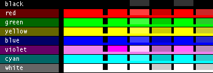
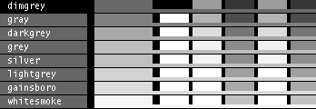
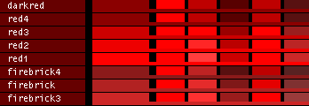
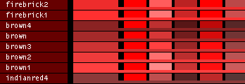
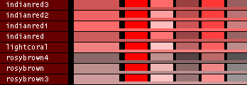
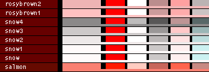
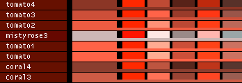
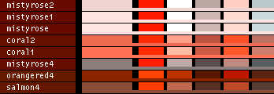
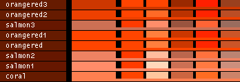
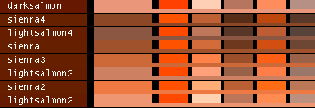
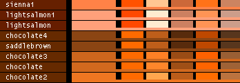
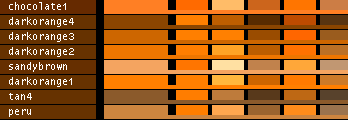
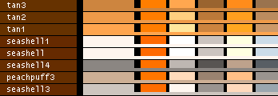
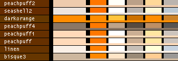
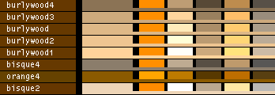
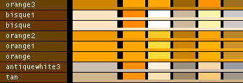
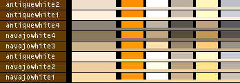
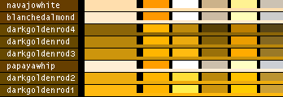
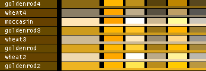
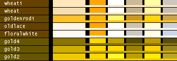
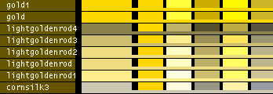
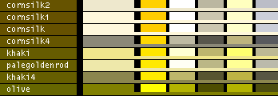
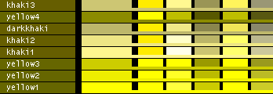
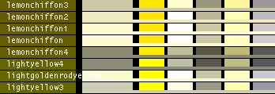
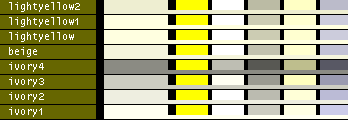
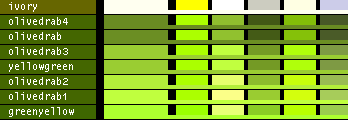
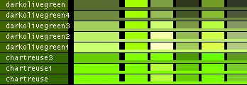
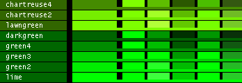
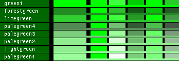
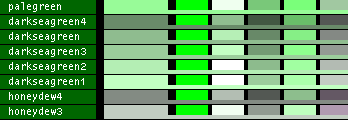
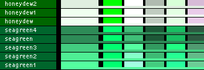
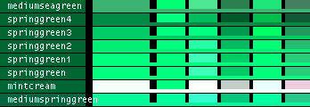
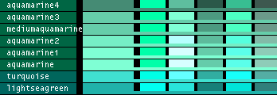
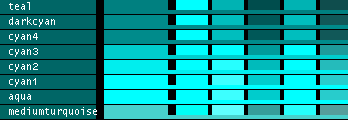
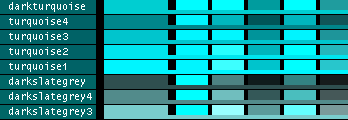
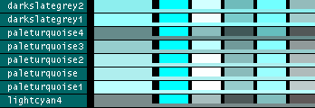
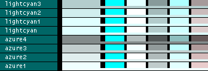
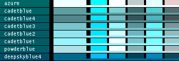
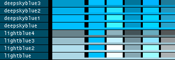
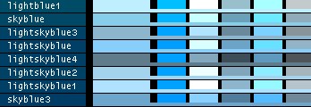
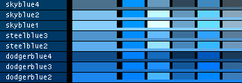
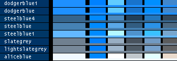
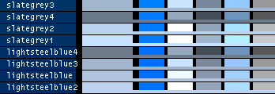
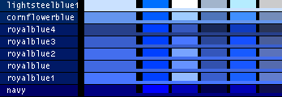
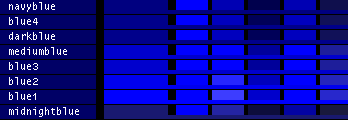
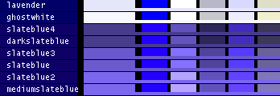
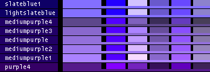
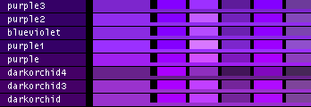
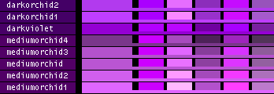
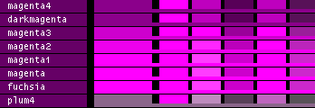
 Image.BMP.encode()
Image.BMP.encode()